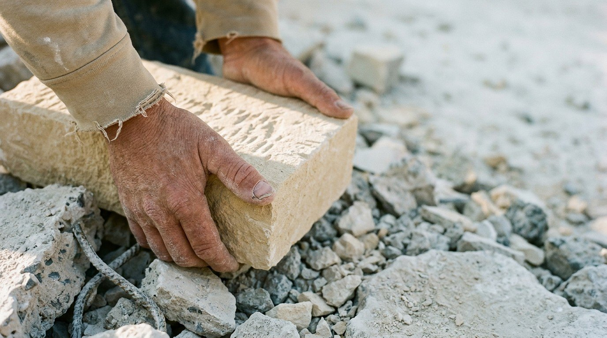
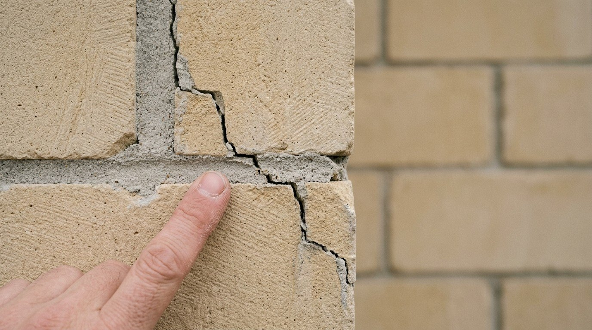
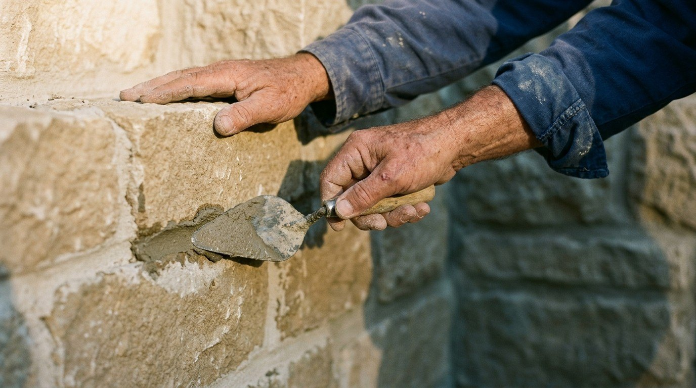

رسالة من مغترب
رجع على بلده ليعمّر ما هدّمه النظام المجرم… فاصطدم بواقع موجع!
العودة
للأسف الشديد، الصدمة اللي عاشها هالمغترب، يمكن عاشها كتير غيره من الناس اللي رجعوا على بلدهم بعد سنين من الغربة، حاملين معهم الأمل إنهم يساهموا بإعادة الإعمار وبناء مستقبل أفضل.
ما كان متوقّعاً
بس الصدمة ما كانت بالاقتصاد، ولا بالدمار، ولا حتى بقلة الإمكانيات…
لأن كل هاد كان متوقّع.

الصدمة الحقيقية كانت بالإنسان!
بإنسان صار البعض منه يشوف أكل مال الحرام شطارة، والغش ذكاء، والكذب فهلوة، والوفاء بالكلمة ضعف!
بإنسان ممكن يربح خمسين ليرة على حساب خسارتك مليون، وما يهتزّ له جفن!
بإنسان ما عنده مشكلة يضرّك، ويعطّل شغلك، ويضيّع وقتك، ويخرب مستقبلك، كرمال مصلحة تافهة، حتى لو كان مو محتاج هالربح أصلًا!
بإنسان صار احترام المواعيد عنده استثناء، والوفاء بالوعود نادر، ومساعدة المحتاج لوجه الله صارت عملة نادرة.
بإنسان بيتطلّع برزقة غيره بدل ما يسعى برزقته، وبيحاول يكسر اللي أنجح منه، ويستقوي على الأضعف منه، وبيعتبر نجاح غيره تهديد إله!
والأوجع من كل هاد، لما تلاقي شخص متغطّي بغطاء الدين، وبيحكي باسم الأخلاق، لكن بتصرفاته بيخالف كل شي بيقوله!

وهون بيجي السؤال الأهم:
نحنا شو بدنا نعيد إعمار بالضبط؟
بدنا نبني بيوت مهدّمة، ونترك النفوس مهدّمة؟
بدنا نصلّح الطرقات، ونترك طريق الأخلاق مسدود؟
بدنا نفتح مصانع وشركات، ونترك الغش والنصب والكذب هي القاعدة؟
بدنا نرفع الحجر، وننسى الإنسان اللي هو أساس كل بناء؟
الاستبداد والفرد
خمسون سنة١ من حكم الاستبداد والفساد تركت آثارها على المجتمع، لكن ما بصير نعلّق كل أخطائنا على شماعة النظام السابق، ولا نعتبر كل إنسان فاسد ضحية وما إله مسؤولية عن أفعاله.
النظام المجرم دمّر البلد، لكن مسؤوليتنا اليوم إننا ما نسمح للفساد يكمل تدميرها من داخل المجتمع.
الحديث والأمناء
لا يؤمن أحدكم حتى يحب لأخيه ما يحب لنفسه.
رواه البخاري (13) واللفظ له، ومسلم (45)، عن أنس بن مالك. صحيح البخاري، كتاب الإيمان
وين نحنا من هالحديث؟
وين الأمانة؟ وين الصدق؟ وين الرحمة؟ وين مخافة الله؟ ووين الشعور بالآخر؟
ومع هيك، ما لازم نعمّم على الجميع؛ الخير لسه موجود، وفي ناس شريفة وأصيلة وبتخاف الله، وبتساعد بصمت، وبتحفظ الأمانة حتى لو خسرت، وبتحب لغيرها مثل ما بتحب لنفسها.

الضمير
الإعمار مو إسمنت وحديد وحجر وبس… الإعمار الحقيقي بيبدأ لما الإنسان يصير عنده ضمير، ولما التاجر يخاف الله بتجارته، والعامل يحترم شغله، والمسؤول يعدل، والقوي ما يظلم الضعيف، والغني ما يستغل حاجة الفقير.
البلد ما بتنهض بسقوف جديدة إذا العقول بعدها مهدّمة، ولا بتتعافى بشوارع نظيفة إذا النفوس بعدها مليانة فساد.
نحنا بحاجة لإعادة بناء الإنسان قبل البنيان، ولثورة أخلاقية حقيقية تعيد للصدق قيمته، وللأمانة مكانتها، وللرحمة حضورها.
الله يصلح حالنا وحال بلدنا، ويهدينا جميعًا للحق،